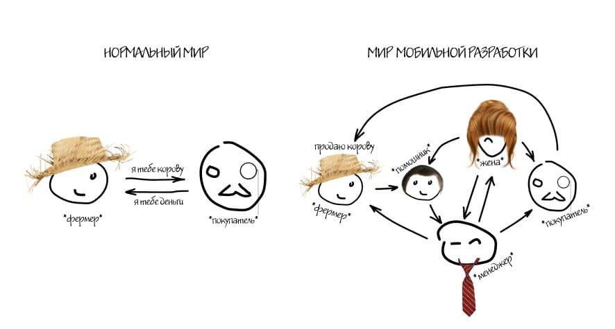

Главная цель архитектуры или зачем столько страданий
Можно выкупить принципы всех архитектур, так и не поняв, зачем столько геморроя © Аристотель, 300кк век до н. э.
Маленькие приложения могут прожить без архитектуры. Первые 5-7 приложений я написал, совершенно не задумываясь о потребности в строгом паттерне. Каждая статья про архитектуру мобильного приложения рождала мысль: "И зачем это усложнение - будем писать в три раза больше кода, чтобы код стал понятнее, вы серьезно?"
А потом начались проекты c десятками тысяч строк. И мне показалось, что понял, зачем нужны MVC, MVVM, MVI, MVP... "Чтобы разносить код приложения в разные классы и модули! Чтобы знать, где что лежит, не открывая файл! Чтобы не плодить God-objects!" - воскликнул наивно
На самом деле нет
Все эти преимущества можно обеспечить и без архитектуры. Создавай кучу классов, придерживайся правил составления имен, — готово
Основная цель любой архитектуры — обеспечить однонаправленный поток данных
Каждый из подходов позволяет сделать так, чтобы у нас был всего один поток данных: из недр приложения (источника данных like база данных\сервер) к пользователю.
При этом в видимой части приложения (UI) могут родиться только события, которые пойдут параллельно данным, но в обратную сторону
Архитектуры спасают нас от ветвления, запрещают нам создавать и изменять данные вне определенного потока, чтобы мы всегда могли пройти по хлебным крошкам и найти, на каком этапе пути (а не макаронного дерева) произошла ошибка
Теперь можно выбирать на практике самую близкую душе архитектуру, понимая их философское значение